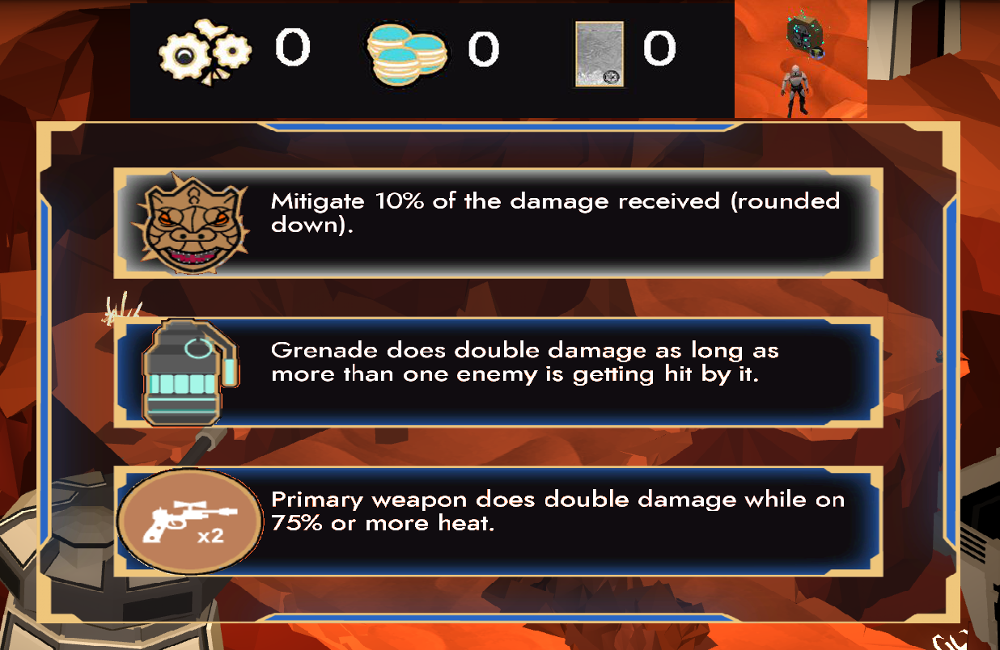

Ferran-Roger Basart
Design
Project Overview
As a member of the design team, I have participated in the decision-making that influenced the core experience, as well as actively generating code in C# for the proper development of the gameplay. Overall, I have worked in many non-C++ fields (almost everything that didn't involve the level geometry), both expanding content and improving what others had done before me.
My contribution
GDD managing
I was placed in charge of correcting and rearranging the Game Design Document to make it as easily readible and useful as possible.
First boss prototyping
At an early stage of the project, I was tasked with doing the first boss' (Rancor) prototype in Unity, following the guidelines previously established by Àlex Melenchón. To make it easy to understand, I assigned a color pattern, where each attack has a corresponding tone, and each of the different tonalities within the same color codify a phase of that attack (start-up, first hit, recovery...).

Second boss polish
After the first implementation of the second boss (Wampa & Skel), I was tasked with polishing it, which mainly consisted of adding and fixing colliders, solving bugs, changing attack timers, adjusting gameplay values (damage, speed...) and implementing (not modeling) the missing animations. In the gif below it's shown the most noticeable bug, which was the disproportionate damage Wampa dealt because of inconsistent collider behaviour.

Intro cinematic (first iteration)
Making the introductory cinematic consisted of making a quick storyboard in Toon Boom Harmony, iterating, assets generation (done by art coworkers), implementation, and more iteration.

Third boss cinematic (final iteration)
Being implemented at the final stages of the project, and being given the storyboard for it, it was a quick and smooth implementation without many changes.

Resources & rewards
I implemented both the player resources (beskar ingot, blue macarons, imperial scraps...) and the boons. Of the later, I made the base structure as rewards (C# static dictionary and class hierarchies), but not the gameplay effects of the boons. Since both are end-level rewards, I was also in charge of doing the functionality to keep track of them (add / substract functions, among others), as well as the UI reward menu when a room is cleared, the reward spawn logic...

Audios
I provided help in the latter iteration of the audio implementation sprint, mainly adding audios that gave feedback to player actions.
Minor tasks
During the project, aside from the many common tasks we all had, I mainly helped with the judging and correction of the Twitter posts, testing and video recording (especially of the older versions), gameplay prototype fixing and the implementation of animations.